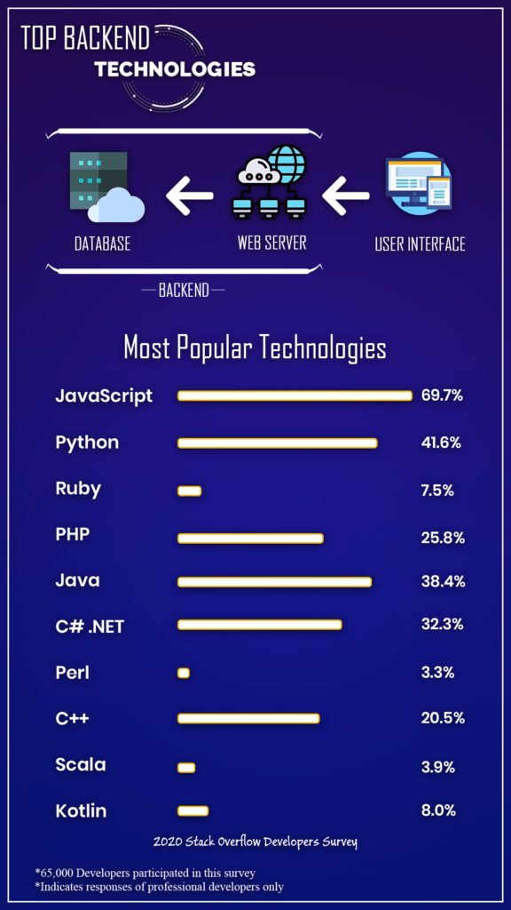

tecnologías backend actuales recomendadas

Las tecnologías backend son fundamentales para el desarrollo web, es util para pequeños empresarios, jefes de tecnología e incluso para la toma de desiciones, por ello es importante seleccionar que tecnología backend es ideal para su proyexto.
Estas tecnologías se pueden escoger basandose en una escala considerando: velocidad de funcionamiento , responder instantaneamente a preguntas y consultas, escoger la opcion correcta es desafiante especialmente para programadores.
| JavaScript |
|---|
|
Desarrollo rápido:Permite a los desarrolladores usarlo como tecnología tanto de frontend como de backend. Económica:Ayuda con sus funciones integradas para el acceso DOM y Hoop, etc. y a menos gastos generales Comunidad de código abierto: El alcance de la mejora disminuye sin la contribución y los comentarios de la comunidad |
| Python |
|
Fácil de entender y programar:Las secuencias de comandos fácil de entender y programar para principiantes y progrmadores senior Bibliotecas extensas: Incluye códigos para pruebas unitarias, bases de datos, expresiones regulares, navegación, email, etc. Asequible: Python es de código abierto y gratuito. |
| Java |
|
Simple y altamente escalable: Permite numerosas instancias a las solicitudes del servidor. Multihilo:Maneja todas las solicitudes en hilos independientes gracias a un servidor web multiproceso. Seguridad:Ofrece excelentes funciones para superar los riesgos de seguridad. |
| C++ |
|
Portabilidad: La independencia de la plataforma es una de las características críticas de las aplicaciones de C++. Programación orientada a objetos:C no admite la programación orientada a objetos, pero C++ satisface esta deficiencia. Lenguaje de bajo nivel:Los sistemas integrados están construidos en C++ porque pueden interactuar directamente con los recursos de hardware. |